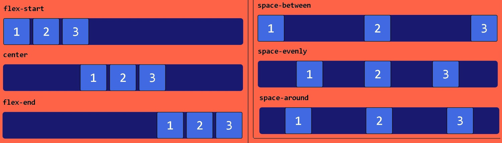
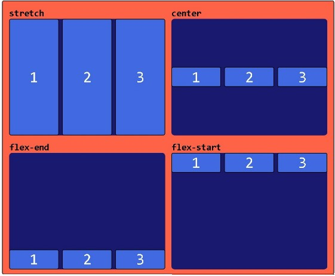

Dentro de um uma caixa Flex, podemos alinhar os itens no main-axsis de acordo com a imagem abaixo
Se o main-axsis estiver disposto na vertical, ele terá o mesmo comportamento porém no outro eixo.
Utilize o exemplo abaixo para treinar e visualizar o código
1º Quadro como exemplo
2º Quadro como exemplo
Também há como posicionar os itens pelo eixo Cross-axis. Não há a mesma opção de de space-* que o no eixo Main-axsis.
É usado apenas para alinhar linhas e não um conjunto delas.
Foi retirada a altura no primeiro quadro dos itens para que align-itens:stretch; seja observado.
1º Quadro
2º Quadro